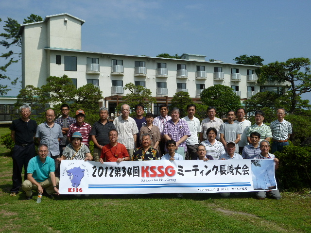
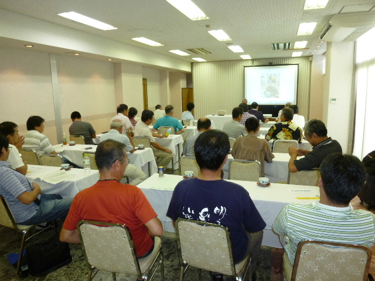

Flash ! DX


|
|
|
|
|
|
|
[Back Issues Sep.2012]
TIME:UTC(JST-09:00)
Report from JA1RJU(PM95sq)
30.Sep.2012(15:00c)
ëÂå^ë‰ïó17çÜÇÕìåäCínï˚Ç…è„ó§ÅEä÷ìåçbêMâzÇí âflÅB
Åùë‰ïó17çÜÇÕåflå„19:00éûç†Ç…à§ímåßìåïîÇ…è„ó§ÅAí∑ñÏåßìåïîÇí âflíÜÇ≈ä÷ìåínï˚ÇÕ
ñ\ïóàÊÇ…ì¸Ç¡ÇƒÇ¢ÇÈÅB
ìåãûÅEêºïîÇÃî™â§éqés(PM95)Ç≈ÇÕ37.3mÇÃã≠ïóÇäœë™ÇµÇΩÅB
ë‰ïóÇÕä÷ìåçbêMâzÇìåñkÇ…êiÇÒÇ≈í âflå„ÅAñæì˙ñ¢ñæÇ…ìåñkínï˚ÇècífÇÃå©çûÇ›ÅB
çîN9åéÇ…ä÷ìåëSàÊÇ…ëÂÇ´Ç»îÌäQÇó^ǶÇΩë‰ïó15çÜÇÊÇËêºäÒÇËÇÃÉãÅ[ÉgÇí Ç¡ÇΩÇΩÇflÅA
ä÷ìåínï˚Ç≈ÇÃïóÇ…ÇÊÇÈîÌäQÇÕñ∆ÇÍǪǧÅB(ì˙ñ{éûä‘22:00åªç›)
----------------------------------------------------------------
Åùã„èBÇ≈ìÏïƒÇ™ÉIÅ[ÉvÉì
LU5FF 0310Z 50106.0 CW CQ QTF 95 JR6EXN
ZP5SNA 0303Z 50103.0 CW CQ JH6BPG-#
PY1RO 0258Z 50108.0 tnx qso JE6AZU-#
XE2YW 0238Z 50105.0 PLZ CW,SSB JE6AZU
ZP5SNA 0238Z 50103.0 CQ 559 JE6AZU-#
LU5FF 0234Z 50106.0 Cq 559 JE6AZU-#
LU5FF 0233Z 50110.5 Tnx qso JE6AZU-#
ZP5SNA 0158Z 50110.6 Tnx qso 519 JE6AZU-#
ZP5SNA 0152Z 50110.6 weak in/out JE6AZU-#
----------------------------------------------------------------
Report from JA1RJU(PM95sq)
29.Sep.2012(15:00d)
3D2C 08:41 50.110 CW CQ
3D2C 08:45 50.110 SSB RS59!
3D2C 09:28 50.110 CW
VK7RR/4 09:31 50.110 SSB CQ on 3D2C
3D2C 09:33 50.110 CW UP
3D2C 10:33 50.110 CW UP
DU7/PA0HIP 12:47 50.110 CW CQ
VK8MS 12:49 50.110 CW CQ
Report from JA1RJU(PM95sq)
28.Sep.2012(15:00e)
VK4WTN 03:47 50.105 CW
VK4WTN 03:51 50.110 SSB CQ
VK4TJ 03:54 50.100 CW CQ
VK4TJ 03:59 50.100 CW @ RST599/539
VK4EK 04:14 50.110 SSB CQ
VK4WM 05:17 50.103 CW CQ
VK6KXW 05:23 50.110 CW CQ
VK6OX 05:32 50.105 CW CQ
VK6KDX 05:35 50.125 SSB
VK6JJ 05:36 50.125 SSB
VK6JJ 05:39 50.100 CW CQ
VK6AKT 05:41 50.120 SSB
VK6RPH/b 05:44- 50.066 CW Beacon
VK6RSX/b 06:05- 50.304 CW Beacon
DU7/PA0HIP 07:41 50.105 CW CQ
3D2C 08:53 50.110 CW
3D2C 08:56 50.110 SSB RS59!
3D2C 09:41 50.110.5 CW
3D2C 09:53 50.110.5 CW @ UP4 RST599/599
3D2C 10:35 50.110.5 CW still into PM95
VK9XS 12:30 50.150 SSB UP20! (QSL to JA1PBV)
VK9XS 13:01 50.150 SSB @ UP16 RS59/59
9W6RT 13:22 50.115 SSB
Report from JA1RJU(PM95sq)
27.Sep.2012(15:00d)
VK6RSX/b 08:38- 50.304 CW Beacon
VK6RSX/b 09:15- 50.304 CW Beacon
VK4RTL/b 09:45- 50.282 CW Beacon
VK6RSX/b 12:45- 50.304 CW Beacon
VK4RTL/b 12:45- 50.282 CW Beacon
VK8VF/b 12:45- 50.310 CW Beacon
9W6RT 12:50 50.110/115 SSB
9M6YBG 12:57 50.110 CW CQ
VK9CS 12:58 50.110 CW CQ
VK9CS 13:01 50.120 CW @ RST579/599 (QSL to JA1PBV)
9M6YBG 13:30 50.110 SSB CQ
YB0AN 13:32 50.115 SSB CQ
9M6YBG 13:38 50.125 SSB CQ
DU7/PA0HIP 13:47 50.120 CW Calling VK9CS
DU7/PA0HIP 14:29 50.111 CW CQ
Report from JA1RJU(PM95sq)
26.Sep.2012(15:10e)
VK6RSX/b 08:30- 50.304 CW Beacon
3D2C 08:40 50.110 SSB Conway Reef (QSL via YT7AD)
3D2C 08:44 50.110 SSB @ Op.Peter (PY5CC=PP5XX)
3D2C 09:30 50.110 SSB still CQ CQ CQ !
VK4TL 09:31 50.110 CW CQ
3D2C 09:45 50.110 SSB CQ CQ CQ...
VK4TL 09:56 50.110 SSB/CW
3D2C 10:00 50.110 SSB still CQ
VK6RSX/b 12:35- 50.304 CW Beacon
9M6YBG 12:40 50.110 CW
VK4TL 12:41 50.110 CW QSO with 9M6YBG
DU7/PA0HIP 12:45 50.110 CW CQ
DU1EV/B 12:45- 50.008 CW Beacon RST599
VK4RTL/b 12:54- 50.282 CW Beacon
N7ET/DU3 13:25 50.097 CW
VK6KP 13:52 50.105 CW CQ
VK4RTL/b 13:55- 50.282 CW Beacon
VK6RSX/b 13:55- 50.304 CW Beacon
VK8VF/b 13:55- 50.310 CW Beacon
VK9CS 14:00 50.110 CW UP2-3
VK9CS 14:28 50.110 SSB
VK9CS 14:49 50.115 CW
DU7/PA0HIP 14:45 50.110 CW
9M6YBG 14:57 50.110 CW QSO with VK9CS
DU7/PA0HIP 15:07 50.105 CW CQ DX
Report from JA1RJU(PM95sq)
25.Sep.2012(15:00d)
VK6RSX/b 08:45- 50.304 CW Beacon
FK8CP 09:14- 50.110 CW CQ
FK8CP 09:33- 50.110 CW CQ DX RST599
DU7/PA0HIP 12:45 50.110 CW CQ
VK6RSX/b 12:45- 50.304 CW Beacon
YB0CBI 12:58 50.120 SSB
YB0MWM 13:19 50.120 SSB
YB0AN 13:20 50.120 SSB
YB0AN 13:37 50.120 SSB @ RS59/55
YB0CRT 13:38 50.120 SSB @ RS59/55
YB0CBI 13:39 50.120 SSB @ RS59/57
DU7/PA0HIP 13:59 50.105 CW CQ
VK6RSX/b 14:05- 50.304 CW Beacon
Report from JA1RJU(PM95sq)
24.Sep.2012(15:00b)
VK6RSX/b 09:20- 50.304 CW Beacon
Report from JA1RJU(PM95sq)
22-23.Sep.2012(15:00a)
Åù DX-ReportÇÕãxé~ǵNjÇ∑ÅB
Åù 2012 ìåñkÅE6SG Meeting in Miyagi

2012 ìåñk6SG Meeting
Report from JA1RJU(PM95sq)
21.Sep.2012(15:00d)
T8XX 08:17 50.126 CW/SSB QSL via DL5AXX
DU1EV/B 09:09- 50.008 CW Beacon RST599
DU7/PA0HIP 09:09 50.105/110 CW CQ RST599
FK8CP 09:20- 50.110 CW CQ
FK8CP 09:35- 50.110 CW/SSB CQ
DU7/PA0HIP 11:37 50.110 SSB CQ RS59+
VK4JU 12:35 50.105 CW
VK6RSX/b 12:40- 50.304 CW Beacon RST559
Report from JA1RJU(PM95sq)
20.Sep.2012(15:00b)
VK6RSX/b 08:50- 50.304 CW Beacon
VK6KP 08:52 50.110 CW CQ RST599
Report from JA1RJU(PM95sq)
19.Sep.2012(15:00b)
9W6RT 08:34 50.110 SSB CQ
Report from JA1RJU(PM95sq)
18.Sep.2012(15:00b)
VK6RSX/b 06:05- 50.304 CW Beacon
Report from JA1RJU(PM95sq)
17.Sep.2012(15:00b)
Report from JA1RJU(PM95sq)
16.Sep.2012(15:00b)
| Åù NH8S(Swains Island DXpedition) QRT! Update - 16-Sept-1000z.....As team rotation completed, the on-air operation from Swains Island stopped at 0700 UTC Sunday, 16-Sept.....After a good night's sleep, tear-down will begin tomorrow morning in cooler (89Åã) weather..... It is a calm and relaxing time - the team is tired but very happy..... They are receiving world-wide praise for an outstanding job of planning, execution, and on-air operating technique.....Return boat arrives on Tuesday, 18-Sept -- everyone is wishing them a safe return...... The OQRS QSL system is now activated..... Finals stats will be posted on the Statistics page..... We hope you got them in the Log and had a FUN time with this DXpedition.....73 from K6MM |
|
  |